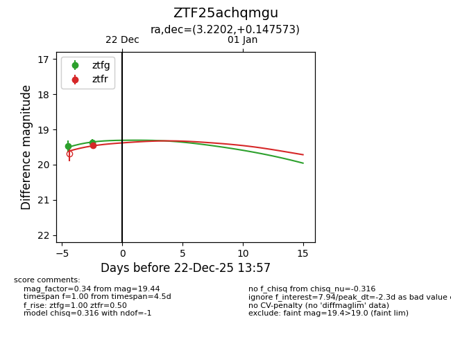
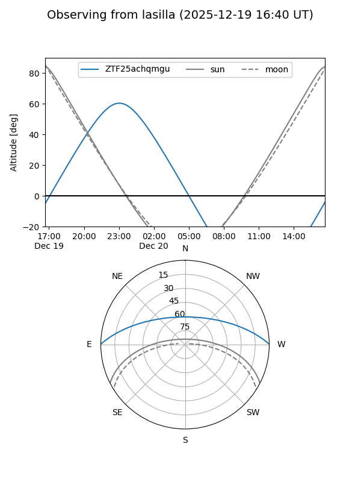
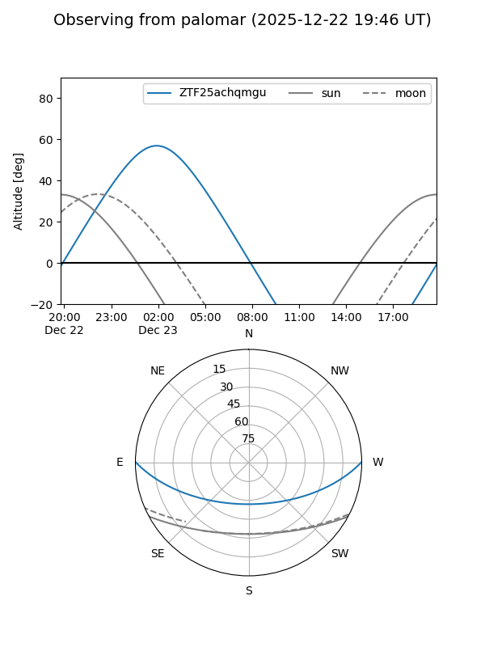
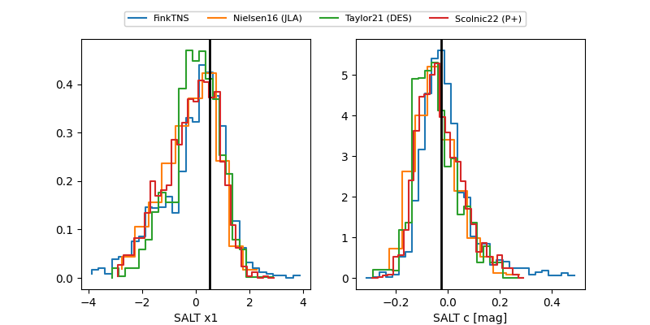

ZTF25achqmgu
Target ZTF25achqmgu at 2025-12-22 14:16
Aliases and brokers:
FINK: fink-portal.org/ZTF25achqmgu
Lasair: lasair-ztf.lsst.ac.uk/objects/ZTF25achqmgu
ALeRCE: alerce.online/object/ZTF25achqmgu
alt names
ZTF25achqmgu (ztf,fink_ztf)
Coordinates:
equatorial (ra, dec) = 3.2202,+0.14757
equatorial (HMS+DMS) = 00:12:52.85,+00:08:51.26
galactic (l, b) = (102.5979,-61.19271)
Flags:
Photometry:
last ztfg=19.27, ztfr=19.44
3 ztfg, 1 ztfr detections
Lightcurve

Visibility


Additional plots
